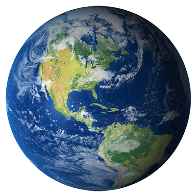
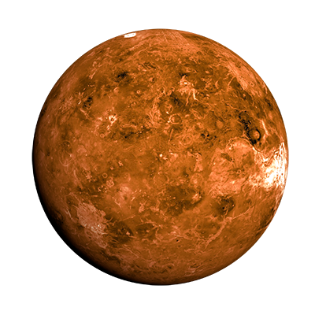
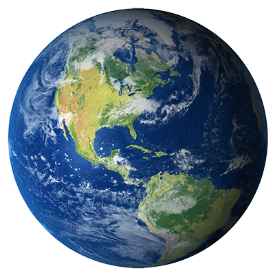
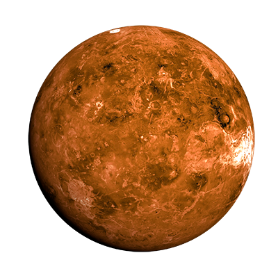

Pluto, once considered the ninth and most distant planet from the sun, is now the largest known dwarf planet in the solar system. It is also one of the largest known members of the Kuiper Belt, a shadowy disklike zone beyond the orbit of Neptune thought to be populated by hundreds of thousands of rocky, icy bodies each larger than 62 miles (100 kilometers) across, along with 1 trillion or more comets.
Dark, cold and whipped by supersonic winds, Neptune is the last of the hydrogen and helium gas giants in our solar system. More than 30 times as far from the sun as Earth, the planet takes almost 165 Earth years to orbit our sun. In 2011 Neptune completed its first orbit since its discovery in 1846. "We see (Neptune) as Columbus saw America from the coast of Spain.
The seventh planet from the sun with the third largest diameter in our solar system, Uranus is very cold and windy. The ice giant is surrounded by 13 faint rings and 27 small moons as it rotates at a nearly 90-degree angle from the plane of its orbit. This unique tilt makes Uranus appear to spin on its side, orbiting the sun like a rolling ball.
Adorned with thousands of beautiful ringlets, Saturn is unique among the planets. All four gas giant planets have rings -- made of chunks of ice and rock -- but none are as spectacular or as complicated as Saturn's. Like the other gas giants, Saturn is mostly a massive ball of hydrogen and helium.
Jupiter is the fifth planet from our sun and the largest planet in the solar system. Jupiter's stripes and swirls are cold, windy clouds of ammonia and water. The atmosphere is mostly hydrogen and helium, and its iconic Great Red Spot is a giant storm bigger than Earth that has raged for hundreds of years.
Mars is a cold desert world. It is half the diameter of Earth and has the same amount of dry land. Like Earth, Mars has seasons, polar ice caps, volcanoes, canyons and weather, but its atmosphere is too thin for liquid water to exist for long on the surface. There are signs of ancient floods on Mars, but evidence for water now exists mainly in icy soil and thin clouds.
Earth is the third planet from the sun and the fifth largest in the solar system. Just slightly larger than nearby Venus, Earth is the biggest of the terrestrial planets. Our home planet is the only planet in our solar system known to harbor living things.
Venus is the second planet from the sun and our closest planetary neighbor.
Similar in structure and size to Earth, Venus spins slowly in the opposite direction most planets do. Its thick atmosphere traps heat in a runaway greenhouse effect, making it the hottest planet in our solar system with surface temperatures hot enough to melt lead. Glimpses below the clouds reveal volcanoes and deformed mountains.
Mercury's eccentric orbit takes the small planet as close as 47 million km (29 million miles) and as far as 70 million km (43 million miles) from the sun. If one could stand on the scorching surface of Mercury when it is at its closest point to the sun, the sun would appear more than three times as large as it does when viewed from Earth.
 


